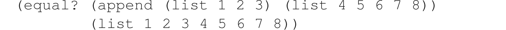

16.7 Finger Exercises: Abstraction
Exercise 267. Use map to define the function convert-euro, which converts a list of US$ amounts into a list of € amounts based on an exchange rate of US$1.06 per € (on April 13, 2017).
Also use map to define convertFC, which converts a list of Fahrenheit measurements to a list of Celsius measurements.
Finally, try your hand at translate, a function that translates a list of Posns into a list of lists of pairs of numbers. 
Exercise 268. An inventory record specifies the name of an item, a description, the acquisition price, and the recommended sales price.
Define a function that sorts a list of inventory records by the difference between the two prices.
Exercise 269. Define eliminate-expensive. The function consumes a number, ua, and a list of inventory records, and it produces a list of all those structures whose sales price is below ua.
Then use filter to define recall, which consumes the name of an inventory item, called ty, and a list of inventory records and which produces a list of inventory records that do not use the name ty.
In addition, define selection, which consumes two lists of names and selects all those from the second one that are also on the first.
Exercise 270. Use build-list to define a function that
1. creates the list (list 0 … (- n 1)) for any natural number n;
2. creates the list (list 1 … n) for any natural number n;
3. creates the list (list 1 1/2 … 1/n) for any natural number n;
4. creates the list of the first n even numbers; and
5. creates a diagonal square of 0s and 1s; see exercise 262.
Finally, define tabulate from exercise 250 using build-list.
Exercise 271. Use ormap to define find-name. The function consumes a name and a list of names. It determines whether any of the names on the latter are equal to or an extension of the former.
With andmap you can define a function that checks all names on a list of names that start with the letter "a".
Should you use ormap or andmap to define a function that ensures that no name on some list exceeds a given width?
Exercise 272. Recall that the append function in ISL concatenates the items of two lists or, equivalently, replaces '() at the end of the first list with the second list:

Use foldr to define append-from-fold. What happens if you replace foldr with foldl?
Now use one of the fold functions to define functions that compute the sum and the product, respectively, of a list of numbers.
With one of the fold functions, you can define a function that horizontally composes a list of Images. Hints (1) Look up beside and empty-image. Can you use the other fold function? Also define a function that stacks a list of images vertically. (2) Check for above in the libraries.
Exercise 273. The fold functions are so powerful that you can define almost any list processing functions with them. Use fold to define map.
Exercise 274. Use existing abstractions to define the prefixes and suffixes functions from exercise 190. Ensure that they pass the same tests as the original function.